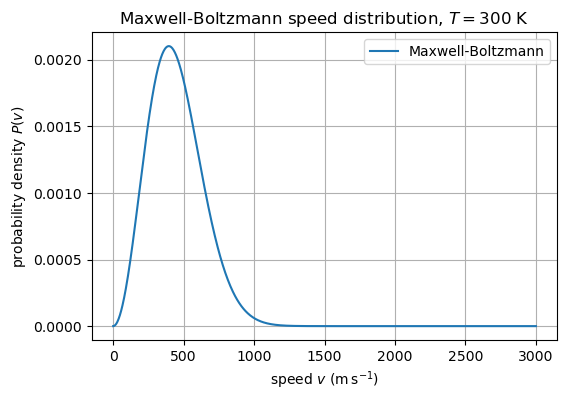
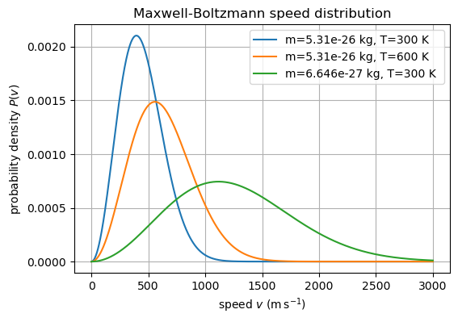
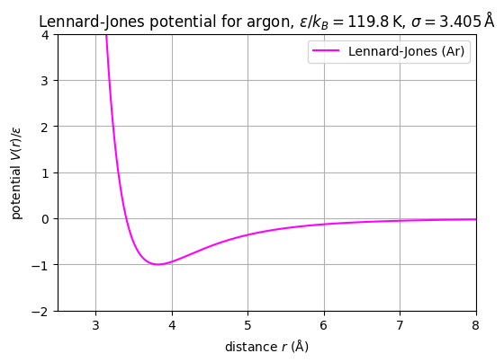

Uke 3 – Kinetisk gassteori#
Diskusjonsoppgaver#
Tema for denne uken er gasser, og vi begynner med idealgasser som vi kan behandle som klinkekuler hvor den eneste frihetsgraden er farten til atomene. Forrige uke så vi at energier til partiklene i et system er fordelt i henhold til Boltzmann fordelingen. Denne uken skal vi se på hva dette betyr for bevegelsen av atomer i gasser, og hvordan det gjør oss i stand til å forutsi hva som skjer når vi endrer parametre som temperatur, stoffmengde og kjemisk sammensetning.
Oppgave 1: Idealgasser#
Idealgasser er et godt utgangspunkt for å forstå den molekylære oppførselen til stoffer, men det er viktig å være klar over antagelsene vi gjør når vi antar idealgass-oppførsel og begrensningene på hva en slik enkel modell kan beskrive.
a) Hvilke egenskaper er sentrale for gasser, både fra et mikro og makro perspektiv. Hva skiller de fra væsker og faste stoffer?
Svar Sentralt her er at gasser har lav tetthet i forhold til både væsker og faste stoffer, noe som innebærer at det er stor avstand mellom gasspartiklene, og at vekselvirkningene mellom gasspartiklene er svake og (relativt) sjeldne. Gasspartiklene vil som regel bevege seg langt før de kolliderer med andre partikler eller veggene i beholderen. Noe som både lar de fylle rommet de er i, og utøve et trykk på beholderen.
b) Idealgasser er en forenklet beskrivelse, hvor vi ser bort i fra flere egenskaper som virkelige gasser har. Hvilke egenskaper ser man bortifra når man snakker om idealgasser?
Svar I Idealgasser så ser vi på atomene som klinkekuler, dermed ser vi bort i fra både den molekylære strukturen til gassmolekyler som også kan oppta energi, og på alle former for svake vekselvirkinger mellom molekylene, som betyr at det er en gitt potensialenergi i gasser som vi ser bort i fra.
c) Ranger gassene \(\mathrm{O_2}\), \(\mathrm{NH_3}\), \(\mathrm{Ne}\) etter hvor godt de blir beskrevet av idealgassloven, og begrunn svaret.
Svar \(\mathrm{Ne}\) er en monoatomær gass, med få og sterkt bunnede elektroner som ikke blir lett polarisert. For en slik gass passer en klinkekulebeskrivelse ganske bra. Etter dette kommer \(\mathrm{O_2}\), siden den består av molekyler bygget opp av 2 atomer har den en molekylær struktur, som kan oppta energi i form av rotasjon og vibrasjon i tillegg til translasjon, og et mer polariserbart elektronfelt som resulterer i sterkere vekselvirkinger mellom atomene. Dårligst passer \(\mathrm{NH_3}\) som har større molekylært volum i tillegg et dipolmoment på grunn av uparet elektronpar. Noe som fører til forholdsvis sterke intermolekylære krefter mellom molekylene.
d) Vil idealgassloven være en bedre beskrivelse av en gass ved lav eller høy temperatur? Hva med trykk, begrunn svaret?
Svar Den kinetiske energien til molekylene øker med temperaturen, så jo høyere temperaturen er jo mer kinetisk (i tillegg til rotasjonell og vibrasjonell) energi har molekylene, og disse bidragene dominerer mer og mer over svake intermolekylære krefter som London og Van der Waal krefter. Dermed blir idealgass tilnærmingen, som antar at molekylene kun har kinetisk energi bedre ved høyere temperaturer. Idealgassloven antar også at gassatomene er punktmasser og ikke tar opp noe volum, ved lavt trykk er dette en god tilnærming, da det er få molekyler på det tilgjengelige volumet, men ved høyere trykk blir opptar gassmolekylene større andel av det frie volumet, og passer derfor dårligere med idealgassloven.
e) Under en destillasjon av et volatilt produkt, kondenseres til slut produktet fra gass tilbake til en væske. Er dette en prosess vi kan beskrive med idealgassloven, hvorfor, hvorfor ikke?
Svar Kondensasjon er en faseovergang fra gass til væske, hvor de intramolekylære kreftene vil dominere, og oppførselen til stoffet endres. Partiklene beveger seg ikke lengre til de kolliderer, men de er bundet opp i væskefasen, volumet blir begrenset og videre komprimering (reduksjon av volum) er svært energikrevende. Siden de intermolekylære kreftene dominerer, kan vi ikke se bort i fra de som vi gjør i idealgassantagelsen.
Hovedpoenget, vi trenger intermolekylære krefter for å beskrive faste stoffer, væsker og faseoverganger.
Oppgave 2: Fartsfordelingen til gasser.#
a) I forelesning kom dere fram til Maxwell-Boltzmann farts-fordelingen:
Hva er dette en fordeling over, og hva er \(m\), \(k_B\) og \(T\)?
Svar Dette er sannsynlighetsfordeling til farten til et gassmolekyl ved termisk likevekt for en gitt molekylmasse \(m\) ved en gitt temperatur \(T\), der \(k_B\) er Boltzmanns konstant. For å få sannsynligheten for en gitt fart må vi se på \(f(v)dv\) og for å finne ut sannsynliheten for at en partikkel har fart mellom \(v_1\) og \(v_2\) må vi ta integralet \( \int_{v_1}^{v_2} f(v) dv\), dette kan vi også se på som andelen partikler som har fart mellom \(v_1\) og \(v_2\).
b) Denne fordelingen følger direkte av Boltzmann fordelingen vi så på forige ute, i tillegg til noen viktige antagelser om gassen og tilstanden til systemet. Hvilken antagelse måtte vi gjøre for å komme fram til denne fordelingen, tenk på hva vi antar om energien til en gasspartikkel, retningen gasspartiklene kan bevege seg i, og er systemet nærme eller langt unna likevekt?
Svar Vi antar for det første at energien til partiklene er fordelt i henhold til Boltzmann distribusjonen, denne foruttsetter termisk likevekt. Så antar vi at partiklene kun har kinetisk energi, slik at dette er den eneste bidraget som ingår i Boltzmann-fordelingen:
Vi antar videre at energinivåene ligger så tett at vi kan se på det som en kontinuerlig fordeling av energitilstander, vi antar også at retningen en gasspartikkel beveger seg i har ikke så mye å si, bare farten (gassen er isotrop). Dermed vil antall partikler som har en fart mellom v og v+dv gitt ved \(4\pi v^2 dv\) (det vokser som et kuleskall). Dette gir utrykket:
Ved å evaluere integralet og forenkle ender vi opp med Maxwell-Boltzmann fordelingen gitt i oppgave a.
c) Plot Maxwell-Boltzmann fordelingen, bruk: $\(k_B=1.380649\cdot10^{-23} J/K\)\( \)\(T=300 K\)\( og massen til et \)\mathrm{O_2}\( molekyl \)\(m=5.31\cdot10^{-26} kg\)$
Plottingen kan greit gjøres i Python og dere finner forslag til en kodesnutt under, men husk at dere må definere selve fordelingen:
Bruk plottet til å svare på følgende:
Kan man forvente at den mest sannsynlige hastigheten er det samme som gjennomsnittshastigheten? Hvorfor, hvorfor ikke?
Hva gjør at sannsynligheten for en gitt hastighet først øker, og så synker?
Hint: Tenk på hvordan antallet mulige måter en partikkel kan ha en gitt hastighet ved høyere og høyere hastigheter, og hva vi vet fra Boltzmann, om fordelingen av energier når totalenergien er begrenset.
Svar See plot under. Den mest sannsynlige farten er gitt at toppunktet til fordelingen, men siden Maxwell-Boltzmannfordelingen er asymmetrisk, med en hale mot høyere fart, vil dette forskyve gjennomsnittsfarten mot høyere verdier. Alstå er den mest sannsynlige farten noe lavere enn gjennomsnittsfarten. Fra forelesning har vi at gjennomsnittsfarten er:
mens den mest sannsynlige farten er:
I Maxwell-Boltzmannfordeligen har vi først en faktor med \(v^2\) som får sannsynligheten til å øke når \(v\) øker. Dette kommer av at siden alle retninger er likegyldige (isotrop gas) så vokser antallet forskjellige hastighetsvektorer \(\vec{v}=[\vec{v_x},\vec{v_y},\vec{v_z}]\) som tilsvarer en gitt fart \(v=|\vec{v}|=\sqrt{\vec{v_x}^2+\vec{v_y}^2+\vec{v_z}^2}\), proporsjonalt med \(4\pi v^2\) (altså i form av et kuleskall).
Til å begynne med er dette leddet dominerende, men fra Boltzmann-fordelingen vet vi at sannsynligheten for å finne en partikkel i en gitt energi, eller fart i antagelsen om at partiklene kun har kinetisk energi, synker eksponentielt med økende energi/fart. Dette git opphav til faktoren \(e^{-\frac{mv^2}{2k_B T}}\) som etterhvert blir dominerende og presser sannsynligheten eksponentielt ned mot 0. Merk at dette gir en lang hale, hvor noen få gassmolekyler har høye hastigheter og at sannsynligheten aldri blir helt lik 0.
import numpy as np
import matplotlib.pyplot as plt
# --- physical constants -------------------------------------------------
kb = 1.380649e-23 # J·K⁻¹
T = 300.0 # K
m = 5.31e-26 # kg (≈ O₂ molecule)
# --- Maxwell–Boltzmann speed distribution -------------------------------
def MB_fordeling(v, m, kb, T):
f_v= 4*np.pi * (m/(2*np.pi*kb*T))**1.5 * v**2 * np.exp(-m*v**2/(2*kb*T))
return f_v
# --- Hastigeter vi skal plotte -----------------------------------------------
v = np.linspace(0, 3000, 1000) #fra 0 til 3000 m/s, med 1000 punkter imellom.
# Regn ut Maxwell-Boltzmann fordelingen for disse hastighetene
f_v = MB_fordeling(v, m, kb, T)
# --- plot ---------------------------------------------------------------
plt.figure(figsize=(6,4))
plt.plot(v, f_v, label='Maxwell‑Boltzmann')
plt.xlabel('speed $v$ (m s$^{-1}$)')
plt.ylabel('probability density $P(v)$')
plt.title('Maxwell‑Boltzmann speed distribution, $T=300$ K')
plt.legend()
plt.grid(True)
plt.show()

d) I tillegg til plottet dere lagde i oppg c, plot i samme graf en fordeling der dere setter \(T=600\)K og en fordeling der dere setter \(m=6.646\cdot10^{−27}\) som er omtrentlig massen til et Helium atom. Det skal altså være 3 fordelinger i samme plot. Bruk dette til å svare på hvordan temperatur og masse påvirker fartsfordelingen, og forklar hvorfor?
Svar Se plott under:
Ved høyere temperatur, forskyves fordelingen mot høyere hastigheter, men den blir bredere og flatere, dette kommer av at nå er den termiske energien høy nok til at flere molekyler kan ha høyere hastigheter. Samtidig blir faktoren.
Mindre når T øker, som reduserer sannsynligheten og bidrar til normaliseringen slik at integralet under Maxwell-Boltzmann kurven blir 1.
Ettersom at den kinetiske energien er gitt av \(\frac{1}{2}mv^2\) vil lettere partikler ha høyere hastigheter ved en gitt temperatur. Både i prefaktoren og i eksponenten finner vi \(\frac{m}{T}\), så en reduksjon i masse har samme effekt som en økning i temperatur.
fv_400=MB_fordeling(v, m, kb, 600)
fv_he=MB_fordeling(v, 6.646e-27, kb, T)
plt.figure(figsize=(6,4))
plt.plot(v, f_v, label='m=5.31e-26 kg, T=300 K')
plt.plot(v,fv_400,label='m=5.31e-26 kg, T=600 K ')
plt.plot(v,fv_he,label='m=6.646e-27 kg, T=300 K ')
plt.xlabel('speed $v$ (m s$^{-1}$)')
plt.ylabel('probability density $P(v)$')
plt.title('Maxwell‑Boltzmann speed distribution')
plt.legend()
plt.grid(True)
plt.show()

### Forslag til kode for å plotte Maxwell-Boltzmann fordelingen for hastigheter ###
import numpy as np
import matplotlib.pyplot as plt
# --- Konstanter -------------------------------------------------
kb = 1.380649e-23 # J·K⁻¹
T = 300.0 # K
m = 5.31e-26 # kg (≈ O₂ molecule)
# --- Maxwell–Boltzmann fordeling (Må FYLLES UT!) -------------------------------
def MB_fordeling(v, m, kb, T):
f_v=....
return f_v
# --- Hastigeter vi skal plotte -----------------------------------------------
v = np.linspace(0, 3000, 1000) #fra 0 til 3000 m/s, med 1000 punkter imellom.
# Regn ut Maxwell-Boltzmann fordelingen for disse hastighetene
f_v = MB_fordeling(v, m, kb, T)
# --- plot ---------------------------------------------------------------
plt.figure(figsize=(6,4))
plt.plot(v, f_v, label='Maxwell‑Boltzmann')
plt.xlabel('speed $v$ (m s$^{-1}$)')
plt.ylabel('probability density $P(v)$')
plt.title('Maxwell‑Boltzmann speed distribution, $T=300\,$K')
plt.legend()
plt.grid(True)
plt.show()
Oppgave 3: Molekylære gasser har flere frihetsgrader.#
a) De aller fleste gasser består av mer enn ett atom under vanglie betingelser, men hvile gasser består typisk av kun ett atom, altså monoatomere gasser?
Svar Under vanlige betingelser, romtemperatur og 1 atm trykk, så er det kun edelgassene som er monoatomere gasser.
b) Nevn et par eksempler på vanlige diatomere, triatomere og tetraatomere gasser?
Svar Vanlige Diatomere gasser er for eksempel \(\mathrm{H_2}\), \(\mathrm{N_2}\), \(\mathrm{O_2}\), \(\mathrm{CO}\). Triatomere: \(\mathrm{CO_2}\), \(\mathrm{H_2O}\), \(\mathrm{N_2O}\). Tetraatomere: \(\mathrm{NH_3}\)
c) Hvilke type klassiske frihetsgrader er det for henholsvis monoatomere og fler-atomere gasser? Hvorfor gir det mening å skille mellom lineære og ikke lineære molekyler??
Svar Enkeltatomer, slik som monoatomere gasser består av, har hovedsakelig kun 3 translasjonelle frihetsgrader da de kan bevege seg i x, y og z rettning. Enkeltatomer kan også ha frihetsgrader knyttet til eksitasjon av elekrontilstanden, men klassis så ser vi bortifra dette. Fleratomere molekyler har også en geometrisk utstrekning som gjør at vi kan snakke om rotasjon av molekylet, vanlighvis langs 3 separate akser, dette er rotasjonelle frihetsgrader. NB: For lineære molekyler er rotasjon langs molekylaksen fobunnet med et veldig lavt dreiemoment, og vi ser dermed bortifra denne, noe som gjør at linære molekyler kun har 2 rotasjonelle frihetsgrader. Videre kan atomene i molekylet vibrere med forskjellige vibrasjonsmoder, som gir opphav til vibrasjonelle frihetsgrader.
d) Et fleratomært molekyl har totalt \(3N\) frihetsgrader, hvor mange er det for henholsvis translasjon og rotasjon, hva er resten?
Svar For et generelt fleratomært molekyl, med N atomer, vil det være 3 translasjonelle frihetsgrader, 3 rotasjonelle og \(3N-6\) (resten) vibrasjonelle. Spesialtilfellet med linære molekyler reduserer antall rotasjonelle frihjetsgrader til 2, og dermed blir antallet vibrasjonelle: \(3N-5\)
e) Hva er frihetsgradene til \(\mathrm{O_2}\), \(\mathrm{NH_3}\), \(\mathrm{Ne}\)?
Svar Alle har 3 translasjonelle grihetsgrader, og \(\mathrm{Ne}\) har ikke flere klassiske frihetsgrader, \(\mathrm{O_2}\) har 2 rotasjonelle (lineært molekyl) og \(3\cdot2-5=1\) vibrasjonell frihetsgrad. \(\mathrm{NH_3}\) Har 3 translasjonelle, 3 rotasjonelle og hele \(3\cdot4-6=6\) vibrasjonelle frihetsgrader. Som vi ser så vokser antall vibrasjonelle frihetsgrader veldig fort for større molekyler.
Opggave 4: Ekvipartisjonsteoremet#
Fra ekvipartisjonsteoremet har vi at hver frihetsgrad som bidrar med et kvadratisk energiledd, bidrar med \(\frac{1}{2}k_BT\) til den gjennomsnittlige energien per partikkel:
der f er antallet kvadratiske frihetsgrader.
a) Hva mener vi med kvadratiske frihetsgrader? Hvor mange kvadratiske frihetsgrader er det for hver translasjonell, rotasjonell og vibrasjonell frihetsgrad?
Svar Med kvadratiske frihetsgrader mener vi frihetsgrader som resulterer i at energien forbunnet med den frihetsgraden skalerer med 2. potens av den fysiske størrelsen knyttet til frihetsgraden. For translasjon, så er bevegelsesenergien gitt med \(E_{kin}=\frac{1}{2}mv^2\) altså kvadratisk med farten. For rotasjon er den rotasjonelle energien gitt av \(E_{rot}=\frac{1}{2}I\omega^2\), altså så skalerer rotasjonsenergien med \(\omega^2\). Vibrasjonelle frihetsgrader bidrar med 2 separate kvadratiske ledd både en potensiell energi som kommer av strekking/komprimering av avstanden mellom to atomer i et molekyl, og den kinetiske energien forbundet med vibrasjonsbevegelsen.
b) Hvis \(\langle \varepsilon \rangle\) er gjennomsnittsenergien per partikkel, hva er totalenergien energien for systemet? Hvordan ser dette ut utrykket ved antal mol, istedenfor antal partikler?
Svar
Der \(n\) er antall mol partikler.
c) Gitt at den totale varmekapasiteten \(C_V\) er gitt ved:
Bruk ekvipartisjonsteoremet til å finne et utrykk for den totale varmekapasiteten \(C_V\), hva med den molare varmekapasiteten, altså varmekapasiteten per mol.
Svar
Per mol for vi da:
d) Fra svaret i c, hva er varmekapasiteten til \(\mathrm{O_2}\)?
Svar \(\mathrm{O_2}\) har 3 translasjonelle, 3 rotasjonelle, og 1 vobrasjonel frihetsgrad dermed har vi at den klassiske molare varmekapasiteten for \(\mathrm{O_2}\) er:
e) Eksperimentelt så viser det seg at ved romtemperatur er varmekapasiteten til \(\mathrm{O_2}\) bedre, men ikke helt korrekt beskrevet med:
Hva er forskjellen fra det du fant i oppgave d og hvor kommer denne forskjellen fra?
Svar Forskjellen kommer av at ved romtemperatur så har flesteparten av \(\mathrm{O_2}\) molekylene ikke nok energi til de vibrasjonelle frihetsgradene. Med en dobbeltbinding kreves det veldig mye energi å strekke/komprimere den, enn det kreves for å rotere og translatere molekylet. Så de vibrasjonelle frihetsgradene er “frosset ut” og bidrar veldig lite til varmekapasiteten, da det er veldig få av molekylene som har energi nok til å vibrere. Dermed blir \(\frac{7}{2}R\) et grovt overestimat siden det antar at alle molekylene kan bidra med vibrasjon, mens \(\frac{5}{2}R\) er et bedre estimat, men det underestimerer noe ettersom at det ignorerer alle vibrasjoner, men noen av molekylene vil likevel vibrere.
Oppgave 5: Reelle gasser#
Vi kan få en bedre beskrivelse av reelle gasser, der molekylene ikke er punktmasser og intermolekylære krefter spiller en rolle ved å bruke Van der Waals korreksjonene for idealgessloven:
a) Hvordan kan vi begrunne at volumet reduseres med \(nb\), og hva er b?
Svar Ettersom at hver gass partikkel eller gassmolekyl har et gitt volum, vil det være en begrensing på hvor nærme to partikler kan komme som er større en selve volumet til en partikkel. Dette betegnes som ekskludert volum. Hvis det ekskluderte volumet er \(b\) per partikkel, så vil det totale ekskluderte volumet være \(N\cdot b\) eller per mol \(n\cdot b\).
b) Trykket p reduseres med \(a\frac{n^2}{V^2}\) hva er begrunnelsen for dette?
Svar Intermolekylære krefter som London og Van der Waals krefter gir en tiltrekning mellom gasspartiklene, dette introduserer en potensiell energi og reduserer den kinetiske energien til molekylene. Dermed vil færre atomer kollidere med veggene, og de vil ha noe mindre energi per kollisjon. Dette reduserer trykket. Det er de parvise interaksjonene som er mest betydningsfulle og disse skalerer med tettheten i andre potens altså \(\left(\frac{n}{V}\right)^2\).
c) Uten å slå opp i tabeller, hvordan forventer konstantene a og b konstantene er for \(\mathrm{He}\), sammenlignet med \(\mathrm{O_2}\), hvorfor?
Svar Vi forventer midre a og mindre b for helium sammenlignet med verdiene for \(\mathrm{O_2}\), dette er fordi oksygen er diatomer, altså tar mer plass (større b) og mer polariserbar en \(\mathrm{He}\), dermed større intermolekylære krefter og større a.
Regneoppgaver#
Oppgave 1#
I forelesning uke 35 brukte dere kinetisk gassteori til å vise at temperaturen til en gass er koblet til den gjennomsnittlige kinetiske energien \(\langle E \rangle = \frac{3}{2}nRT\), ved å betrakte gassmolekylene som “klinkekuler” og se på deres bevegelser. Men i ekte molekyler er det ikke bare translasjon som bidrar til den indre energien.
a) For molekyler med 2 eller flere atomer, hvilke andre bevegelser enn translasjon bidrar til energien?
Svar Molekylene vil også rotere, og de kan vibrere.
b) Sett opp et uttrykk for \(\langle E \rangle\) som inkluderer disse bidragene.
Svar \(\langle E \rangle=\langle E_{translasjon} \rangle+\langle E_{rotasjon} \rangle+\langle E_{vibrasjon} \rangle\)
Gitt at vi er ved termisk likevekt vil hver frihetsgrad f i gjennomsnitt bidra med et energibidrag på \(\frac{1}{2}nRT\) til den gjennomsnittlige energien, bortsett fra vibrasjonelle moder som bidrar med \(1nRT\).
c) Finn antall frihetsgrader og et uttrykk for \(\langle E \rangle\) for et lineært molekyl med N atomer (f.eks. \(O_2\)).
Svar Siden molekylet er lineært gjelder det at vibrasjonsbevegelsen bidrar med \(3N-5\) frihetsgrader og rotasjonen med 2 per molekyl. Dermed blir bidraget fra det totale antallet frihetsgrader \(\frac{3}{2}+\frac{2}{2}+(3N-5)\), og \(\langle E \rangle=(\frac{5}{2}+(3N-5))nRT\).
d) Finn antall frihetsgrader et uttrykk for \(\langle E \rangle\) for et ikke-lineært molekyl med N atomer (f.eks. \(H_2O\)).
Svar Siden molekylet er ikke-lineært gjelder det at vibrasjonsbevegelsen bidrar med \(3N-6\) frihetsgrader og rotasjonen med 3 per molekyl. Dermed blir bidraget fra det totale antallet frihetsgrader \(\frac{3}{2}+\frac{3}{2}+(3N-6)\), og \(\langle E \rangle=(\frac{6}{2}+(3N-6))nRT\).
Oppgave 2#
a) Basert på teoretiske frihetsgrader for diatomære molekyler, hva er varmekapasitetene til \(O_2\) og \(N_2\) (g) ved konstant volum? Estimer også \(C_p\) ved bruk av sammenhengen \(C_p=C_V+R\).
Svar Både \(O_2\) og \(N_2\) er diatomære molekyler, og må derfor være lineære. Derfor bidrar rotasjonen med 2 frihetsgrader, og vibrasjonen med \(3\cdot2-5=1\) frihetsgrad (men husk at hver vibrasjonelle frihetsgrad bidrar med \(1nRT\)).
Siden \(C_V=\frac{\partial U}{\partial T}\), og \(U=\langle E \rangle\), får vi (fra ekvipartisjonsteoremet) at den molare varmekapasiteten er
Tabellen under viser eksperimentelle verdier for de molare varmekapasitetene ved konstant trykk (\(C_p\)):
T [K] |
\(C_p [\text{J/molK}]\) for \(O_2\) |
\(C_p [\text{J/molK}]\) for \(N_2\) |
\(C_p [\text{J/molK}]\) for \(I_2\) |
|---|---|---|---|
100 |
\(29.10\) |
\(29.10\) |
\(45.65\) |
300 |
\(29.39\) |
\(29.12\) |
\(54.49\), \(36.89\) |
500 |
\(31.08\) |
\(29.55\) |
\(37.47\) |
700 |
\(32.98\) |
\(32.66\) |
\(37.77\) |
De ulike bevegelsene som bidrar til frihetsgradene har ulike temperaturer hvor de “aktiveres”:
Bevegelse |
Aktiveringstemperatur [K] for \(O_2\) |
Aktiveringstemperatur [K] for \(N_2\) |
Aktiveringstemperatur [K] for \(I_2\) |
|---|---|---|---|
Translasjon |
\(\approx 0\) |
\(\approx 0\) |
\(\approx 0\) |
Rotasjon |
\(<3\) |
\(<3\) |
\(<0.1\) |
Vibrasjon |
\(\approx 2156\) |
\(\approx 3521\) |
\(\approx 308.6\) |
b) I diskusjonsoppgavene så dere at den molare varmekapasiteten ved konstant volum til oksygen ligger nær \(\frac{5}{2}R\) ved romtemperatur, noe som gir \(C_p \approx 29.1 \text{J/molK}\). Bruk aktiveringstemperaturen for vibrasjon til å forklare hvorfor den spesifikke varmekapasiteten til \(C_V(O_2)\) er nærmere \(\frac{5}{2}R\) enn \(\frac{7}{2}R\) ved romtemperatur.
Svar Fra tabellen ser vi at aktiveringstemperaturen for vibrasjon er omtrent \(2156\) K. Dette betyr at ved romtemperatur er det lite sannsynlig at vibrasjonsmodene er aktivert for alle molekylene.
c) Hvorfor er \(C_V=\frac{7}{2}R\) et grovt overestimat, mens \(\frac{5}{2}R\) er et underestimat av varmekapasiteten for \(O_2\)?
Svar Selv om aktiveringstemperaturen er såpass høy vil vi fremdeles ha en fordeling av energi, også for vibrasjonen. Det betyr altså at sannsynligheten for at vibrasjonen til molekylene er aktivert er veldig lav, men ikke helt ubetydelig. Vi har et lite bidrag fra vibrasjonell energi, noe som gjør at den eksperimentelt målte varmekapasiteten er litt høyere enn \(\frac{5}{2}R\). Men siden vibrasjonen kun bidrar litt, vil \(C_V=\frac{7}{2}R\) være et grovt overestimat.
d) Sammenlikn \(C_p\) ved \(300\) K for \(N_2\) og \(O_2\). For hvilken av de to gassene passer estimatet \(C_V=\frac{5}{2}R\) best? Hvorfor?
Svar Aktiveringstemperaturen for vibrasjon for \(N_2\) er langt høyere enn for \(O_2\), dermed vil bidraget fra vibrasjonene bli enda mindre for \(N_2\), og estimatet \(C_V=\frac{5}{2}R\) vil passe nitrogen best.
e) I tabellen ser vi at \(C_p\) for \(I_2\) er veldig høy ved lave temperaturer, og at det ved romtemperatur er oppgitt to ulike verdier for varmekapasiteten. Hva skyldes dette?
Svar Molekylært jod (\(I_2\)) har et smeltepunkt på \(113.6 \degree\) C, men begynner å sublimere allerede ved romtemperatur. Varmekapasitetene som er oppgitt gjelder derfor for fast stoff og for gassfase.
f) Hvilken tilnærming av \(C_V\) passer best for \(I_2\) (g) ved \(300\) K (\(C_V=\frac{5}{2}R\) eller \(C_V=\frac{7}{2}R\))? Hvorfor?
Svar Aktiveringstemperaturen for vibrasjoner for \(I_2\) (g) er veldig lav, og ligger litt over romtemperatur. Derfor vil en signifikant andel av molekylene også vibrere, og \(C_V=\frac{7}{2}R\) (som tilsvarer \(C_p=\frac{9}{2}R\approx 37.4 \text{J/molK}\)) vil være den beste tilnærmingen. Men legg merke til at det fortsatt er et overestimat.
Oppgave 3#
a) To kubiske beholdere med dimensjoner henholdsvis 30cm x 30cm x 30cm og 10cm x 10cm x 10cm inneholder hver 3 mol av gassen \(CO_2\). Beregn trykket i beholderne ved temperaturene 25 °C og 200 °C, først ved hjelp av tilstandsligningen for en ideell gass, deretter ved hjelp av Van der Waals ligningen. Svarene skal oppgis i både Pa og atm. Bruk følgende Van der Waals-koeffisienter for \(CO_2\):
Svar
Vi begynner med den største beholderen.
For \(T_1=298 \text{K}\) gir den ideelle gassloven:
Trykk med enhet \(atm\) kan skrives om ved å bruke at \(1 \text{atm}=101.325 \text{J/L}\). Dermed får vi
Ved \(T_2=200 \degree\) C, får vi
Merk: Her kunne vi også ha funnet spesifikke verdier for gasskonstanten som ville gitt oss trykkene direkte i de ønskede enhetene, i de følgende utregningene vil dette gjøres.
Vi bruker nå Van der Waals likningen på den samme beholderen:
For \(T_2=200 \degree\) C:
For den lille beholderen, \(V_2=0.001 m^3\) får vi ved \(T_1\) og den ideelle gassloven:
Ved \(T_2\):
Bruker nå Van der Waals ved \(T_1\):
og \(T_2\):
Temperatur (K) |
Volum |
Ideell gasslov (Pa) |
Van der Waals (Pa) |
Ideell gasslov (atm) |
Van der Waals (atm) |
|---|---|---|---|---|---|
\(298\) |
\(V_1\) |
\(275 604 \text{Pa}\) |
\(271 724.5 \text{Pa}\) |
\(2.72 \text{atm}\) |
\(2.69\text{atm}\) |
\(473\) |
\(V_1\) |
\(436 710.75 \text{Pa}\) |
\(434 165 \text{Pa}\) |
\(4.31 \text{atm}\) |
\(4.28 \text{atm}\) |
\(298\) |
\(V_2\) |
\(743312.8 \text{Pa}\) |
\(4961206 \text{Pa}\) |
\(73.4 \text{atm}\) |
\(48.9\text{atm}\) |
\(473\) |
\(V_2\) |
\(1179821.9 \text{Pa}\) |
\(9967619 \text{Pa}\) |
\(116 \text{atm}\) |
\(98.4 \text{atm}\) |
b) Hvilke konklusjoner kan du trekke fra de to svarene? Reflekter her både over hvilke egenskaper \(CO_2\) har som gass, og hva slags effekt temperatur har på trykket til en gass. Når det er rimelig å bruke ideell gasslikning og når man bør bruke Van der Waals likningen?
Svar Basert på dette kan vi se at forskjellen mellom det estimerte trykket er mye mindre for lave trykk. Det viser at den ideelle gasslikningen kan brukes i større grad for lave trykk. Det er også tydelig at trykket øker med temperaturen, noe som skyldes at gassmolekylene beveger seg raskere ved høyere trykk, og de kolliderer derfor hyppigere med beholderen. Siden trykket estimert med Van der Waals likningen er lavere enn hva en forventer om det ikke er noen interaksjoner mellom molekylene kan vi konkludere med at det virker attraktive krefter mellom CO2 molekylene. I CO2-gass er de attraktive kreftene dispersjonskrefter (London-krefter).
Gå inn på https://courses.lumenlearning.com/boundless-chemistry/chapter/deviation-of-gas-from-ideal-behavior/ (kopier og lim direkte inn i nettleser hvis lenke ikke fungerer) og besvar følgende spørsmål:
c) Hva skjer med interaksjonene når temperaturen i en gass øker?
Svar Som man ser i simuleringen vil partiklene få en større bevegelsesmengde og oppføre seg mer som individuelle “klinkekuler” når temperaturen øker, gassen oppfører seg mer ideelt. Dette ser vi også fra Van der Waals likningen. Ved høye temperaturer vil det repulsive leddet \(\frac{nRT}{V-nb}\) dominere.
Forrige uke brukte vi Boltzmann-fordelingen til å se på sannsynligheter for å finne partikler i gitte tilstander. Anta nå at gassmolekylene kan være enten i en “bundet tilstand” med energi \(E_b\), eller i en “ubundet” tilstand med energi \(E_u\), vi har at \(E_b<E_u\).
d) Hvorfor gir det mening å anta \(E_b<E_u\)?
Svar En bundet tilstand har vanligvis lavere energi enn en ubundet tilstand fordi energi frigjøres når bindingen dannes. For å bryte bindingen må man tilføre energi like stor som bindingsenergien. Dersom den bundne tilstanden hadde hatt høyere energi enn den ubundne, ville den ikke være energetisk favorisert.
e) Skriv opp forholdet mellom sannsynligheten for bundet og ubundet tilstand ved temperatur \(T\) (bruk Boltzmann-fordelingen), og diskuter hvordan dette forholdet endres når temperaturen øker.
Svar Boltzmann sannsynligheten for hver tilstand vil være \(p_i^* = \frac{e^{-E_i/(k_BT)}}{Q}\). Forholdet mellom de to tilstandene er da
Når temperaturen øker blir forholdet \(\frac{E_u-E_b}{k_BT}\) lite, og eksponenten vil gå mot \(1\) jo høyere temperaturen blir. Dermed vil begge tilstandene være omtrent like sannsynlig, noe som vil si at den termiske energien i systemet vil kunne bryte en stor del av bindingene, og gassen vil oppføre seg mer ideelt.
Ved lave temperaturer blir forholdet \(\frac{E_u-E_b}{k_BT}\) stort, og eksponenten vil bli svært stor. Dette tilsvarer at den bundne tilstanden er mer sannsnynlig ved lave temperaturer.
f) Hva skjer når de intermolekylære kreftene i gassen øker eller minker?
Svar Når de intermolekylære kreftene øker, antatt at vi ser på avstander hvor de hovedsakelig er attraktive, vil \(E_b\) minke og \(\Delta E\) bli større. Dermed vil eksponenten større og en bundet tilstand bli mer sannsynlig. Dette stemmer godt overens med hva man kan observere i simuleringen.
Oppgave 4#
I oppgave 8 brukte dere Van der Waals likningen til å ta hensyn til intermolekylære krefter i en gass. Dette er en makroskopisk beskrivelse, men vi kan også se på tiltrekning og frastøtning mikroskopisk ved bruk av Lennard-Jones potensialet:
hvor \(r\) er avstanden mellom partiklenes sentrum.
a) Tegn en kvalitativ skisse av potensialet, og forklar hva \(\sigma\) og \(\varepsilon\) er.
Svar Nedenfor vises et plott for Lennard-Potensialet til argon. I Lennard-Jones potensialet er \(\sigma\) definert som avstanden mellom partikkel-kjernenene (\(r\)) hvor potensialet er \(0\). \(\varepsilon\) er dybden på potensialbrønnen, og beskriver dermed hvor sterkt de to partiklene interagerer.
import numpy as np
import matplotlib.pyplot as plt
# Fysiske konstanter
k_B = 1.380649e-23 # J/K
# Lennard-Jones-parametere for argon
epsilon = 119.8 * k_B # J
sigma = 3.405e-10 # m (3.405 Å)
def lennard_jones(r, epsilon, sigma):
return 4*epsilon*((sigma/r)**12 - (sigma/r)**6)
# Avstander rundt sigma (i meter)
r = np.linspace(2.5e-10, 8e-10, 500) # ca 2.5 Å til 8 Å
V_r = lennard_jones(r, epsilon, sigma)
plt.figure(figsize=(6,4))
plt.plot(r*1e10, V_r/epsilon, color='magenta', label='Lennard-Jones (Ar)')
plt.xlabel('distance $r$ (Å)')
plt.ylabel('potential $V(r)/\\epsilon$')
plt.title('Lennard-Jones potential for argon, $\\epsilon/k_B=119.8\\,\\text{K}$, $\\sigma=3.405\\,\\text{Å}$')
plt.grid(True)
plt.legend()
# Zoom inn så formen blir tydelig
plt.ylim(-2, 4) # i enheter av epsilon
plt.xlim(2.5, 8.0) # Å
plt.show()

b) Forklar hvordan Lennard–Jones-potensialet beskriver frastøtning ved korte avstander og tiltrekning ved større avstander.
Svar Leddet som beskriver frastøtning og tiltrekning er \(\left[ (\frac{\sigma}{r})^{12} - (\frac{\sigma}{r})^6 \right]\). Den positive delen beskriver frastøtningen (jo lavere potensialet er, jo mer stabile er partiklene), mens den negative beskriver tiltrekningen. Når \(r<\sigma\) vil det positive leddet dominere og partiklene frastøte hverandre.
c) Hva betyr det at dette er en fenomenologisk likning?
Svar Likningen er ikke utledet basert på lover innen statistisk mekanikk eller kvantemekanikk, men tilpasset eksperimentelle observasjoner på en slik måte at den stort sett gir en god tilnærming.
d) Beregn det intermolekylære potensialet mellom to Argon (Ar) atomer separert med en avstand \(4.0\) Ångström. Bruk følgende verdier:
Svar $\(V(r) = 4\epsilon \left[ (\frac{\sigma}{r})^{12} - (\frac{\sigma}{r})^6 \right] = 4(0.997 \text{kJ/mol}) \left[ \left(\frac{3.4 \text{Å}}{4 \text{Å}}\right)^{12} - \left(\frac{3.4 \text{Å}}{4 \text{Å}}\right)^6 \right]\)\( \)\(=3.988(0.14-0.38)=-0.96 \text{kJ/mol}\)$
Gitt at Krypton har \(\varepsilon_{Kr}>\varepsilon_{Ar}\), og \(\sigma_{Kr}>\sigma_{Ar}\).
e) Hvilken gass forventer du har høyest kokepunkt?
Svar Siden \(\varepsilon_{Kr}>\varepsilon_{Ar}\) er tiltrekningen mellom krypton-atomer sterkere enn mellom argon-atomene. Ved kokepunktet må det tilføres nok energi til å overkomme disse tiltrekningskreftene, og derfor forventer vi at krypton vil ha høyere kokepunkt enn argon. Dette stemmer med at argon koker ved omtrent \(87.3\) K og krypton ved \(119.8\) K.
f) Hvilken av gassene tror du har størst effektiv molekylstørrelse?
Svar Siden \(\sigma\) i Lennard-Jones potensialet er den avstanden hvor \(V(r)=0\), kan vi bruke den til å estimere effektiv størrelse. Jo større \(\sigma\) er, jo større verdier for \(r\) vil partiklene kunne merke frastøtning ved. Siden \(\sigma_{Kr}>\sigma_{Ar}\) vil krypton atomer frastøte hverandre ved større verdier for \(r\), og dermed ha større effektiv størrelse.